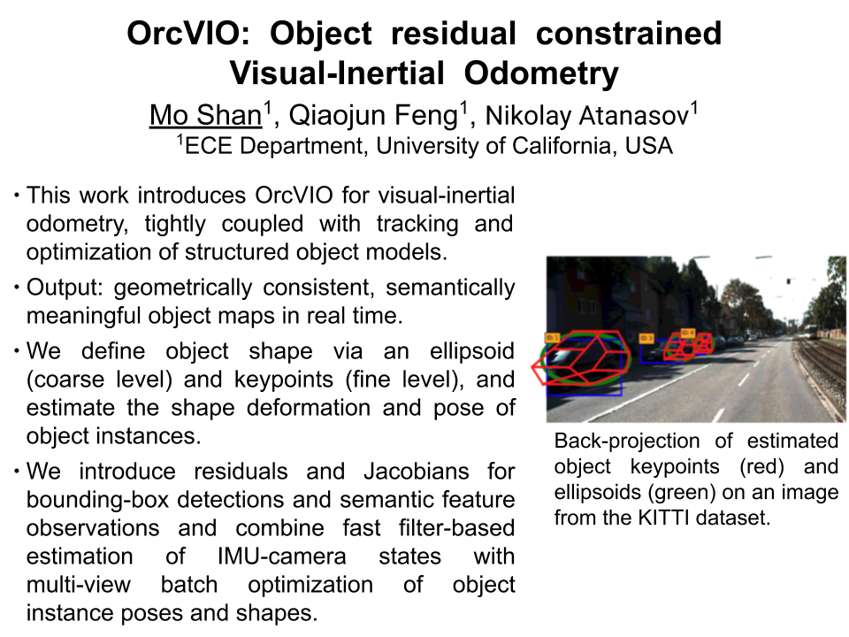
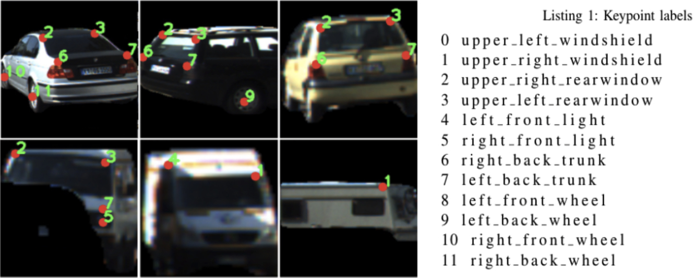
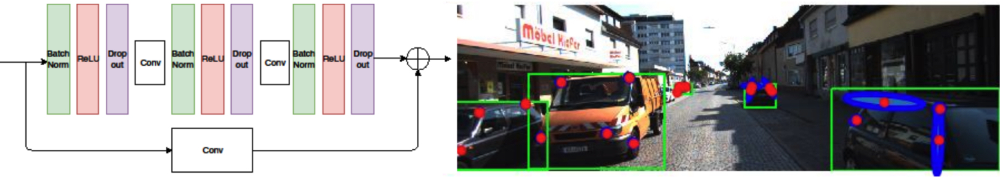
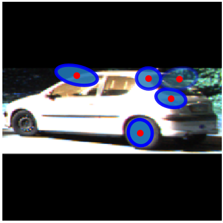

Object residual constrained Visual-Inertial Odometry
Object residual constrained Visual-Inertial Odometry
Department of Electrical and Computer Engineering
University of California, San Diego
|
Introduction

|
Introduction of OrcVIO.
|

|
This animation shows color-coded object level tracks of semantic keypoints, and green tracks of geometric features.
|

|
This animation shows the 2D IOU of bounding-boxes from annotation and those detected by YOLO. In the label, id means our object id, while gt means id in annotation.
|

|
This animation shows the reprojected objects. The object state is reprojected on the image, where object detection is the blue rectangle, object shape is the red wireframe, and the green ellipse is the reprojection of the ellipsoid that we use to represent objects.
|
Demo videos
Demo: short version
Demo: long version
Presentation video
演讲视频
Front end
Semantic keypoint detection
Our approach uses StarMap for semantic keypoint detection. As could be observed in the upper row in Figure below, it could handle a certain degree of viewpoint, scale, and visibility variation, since StarMap uses a large training set to prevent overfitting.
Nonetheless, the lower row shows some failure cases due to occlusion or instance variation. Wrong detections or too few detections will cause troubles in our approach.

|
Semantic keypoint detection from starmap.
|
Keypoint detection covariance
We use Monte Carlo Dropout to obtain the semantic keypoint covariances. Figure below shows how we insert the Dropout layer into the Starmap network and the average covariance obtained from a sampled KITTI dataset.

|
Semantic keypoint uncertainty obtained from approximate Bayesian inference through the stacked hourglass convolutional neural network.
|
Below is a closer view of the keypoint covariance on one car.

|
Semantic keypoint uncertainty on one car.
|
Detection: KITTI 2011_09_26 0095
The front end could work with both colored images or grayscale images. Below is an exmaple of using grayscale images as input.
Tracking: KITTI 2011_09_26 0001
Tracking: KITTI odometry sequences
Back end
Prediction only: KITTI Odometry 07
Geometric feature update: KITTI raw data 09 26 0022
The green path is the groundtruth, the red path is the estimated trajectory, and the
purple ellipsoid is the covariance of the pose estimation.
Geometric feature update: KITTI Odometry 06
Geometric feature update: KITTI Odometry 07
Geometric feature update: outdoor scene with RealSense D435i
Object LM: simulation
OrcVIO: KITTI raw data 09 26 0117
The top left window shows the semantic keypoints tracking, while the bottom left window shows the geometric features tracking. The right window shows the trajectory estimation and object mapping.
Reprojection: KITTI odometry sequences
OrcVIO-lite: KITTI odometry 06
OrcVIO-lite uses bounding box only and no semantic keypoints, more suitable for real time experiments. The test on KITTI odometry 06 uses grayscale images for both front end and back end.
The red line is the estimated trajectory, while the purple ellipsoid is the covariance of the pose. The white points are the geometric landmarks, the colored dots are the active features. The black spheres are the reconstructed cars.
OrcVIO-lite: Flea3 camera
OrcVIO-lite uses bounding box only and no semantic keypoints, more suitable for real time experiments. This test uses grayscale images from a Flea3 camera.
The red line is the estimated trajectory, while the purple ellipsoid is the covariance of the pose. The white points are the geometric landmarks, the colored dots are the active features. The black spheres are the reconstructed cars.
Code
Paper
@inproceedings{orcvio,
title = {OrcVIO: Object residual constrained Visual-Inertial Odometry},
author={M. {Shan} and Q. {Feng} and N. {Atanasov}},
year = {2020},
booktitle={IEEE Intl. Conf. on Intelligent Robots and Systems (IROS).},
url = {https://moshanatucsd.github.io/orcvio_githubpage/},
pdf = {https://arxiv.org/abs/2007.15107}
}
Acknowledgements
This webpage template was borrowed from https://akanazawa.github.io/cmr/.
The acronym of our method is inspired by Warcraft III: The Frozen Throne.
QR code generated from https://www.qrcode-monkey.com/.
|

{kind=link}
{kind=link}
{kind=link}
{kind=link}